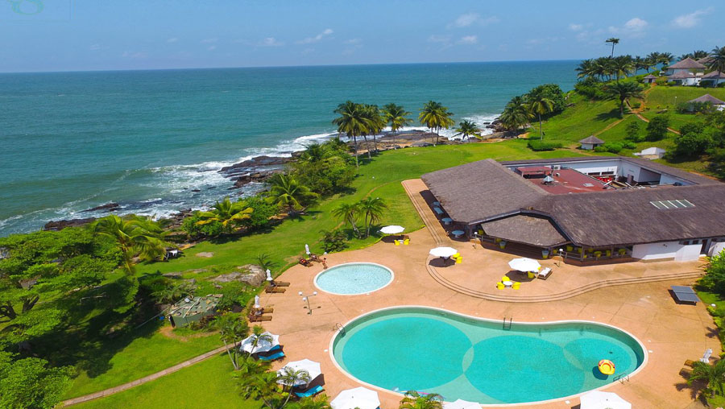

Pays enclavé, la Côte d’Ivoire regorge d’une pléiade de plages aussi belles les unes que les autres réparties sur les 300 000 hectares de plan d’eau et les 550 kilomètres de littoral dont dispose le pays. Lieu de détente, repos et loisir, espace paradisiaque, les plages ivoiriennes font rêver locaux comme touristes. Découvrez le top 5 des plus belles plages avec de la terre d’éburnée.
1- Assinie

Superbe station balnéaire, Assinie fait véritablement rêver par ses plages de sable blanc couvertes de cocotiers et léchées par les eaux plus calmes du golfe de Guinée. Propices à la baignade, les plages d’Assinie et d’Assouindé sont parmi les plus huppées du pays. L’étroite bande de sable de cette presqu’île féerique abrite en effet un grand nombre de villas de luxe. Pouvoir étendre votre serviette dans ce décor de carte postale est donc presque un privilège.
2- Monogaga
Monogaga est un village de pêcheur situé au bord de l’océan à une vingtaine de kilomètres de la ville touristique de San Pédro. Le nom de ce village a été chanté par le célèbre et talentueux artiste Meiway(Un artiste ivoirien) pour sa belle et charmante plage qui ne laisse personne indifférent. Le village de Monogaga doit sa célébrité et sa notoriété à cette baie calme et paisible.
3- La baie des sirènes de San Pedro
En couple, en famille, entre amis ou collaborateurs, découvrez une autre Côte d’Ivoire, à la Baie des Sirènes. Niché sur les promontoires de la baie de Grand Béréby, baigné par des eaux calmes et translucides. Son site naturel et la beauté de ses paysages lui confèrent un caractère unique. Faites face à l'océan ou sur les bords de la rivière Néro, au village ou en soins massage, pour vous relaxer ou vous dépenser, vivez une nouvelle expérience à moins d’1h30 d’Abidjan
4- Le Grand Bereby et sa piscine naturelle

Grand Bereby est une destination prisée des touristes grâce à ses plage ombragées de cocotiers et surtout sa piscince naturelle, le Tabaoulé. La baie est aussi connue des touristes ivoiriens et étrangers grâce à ses somptueux hôtels qui rivalisent en beauté, offrant une belle vue sur l’étendue d’eau.
5- La plage de Grand Bassam

Grâce à son riche patrimoine touristique et historique, Grand Bassam demeure une destination incontournable pour les touristes en visite dans le pays. Cette ville historique de la Côte d’Ivoire possède en son sein un grand littoral bordé d’une belle plage. La plage de Grand Bassam enregistre un grand nombre de touristes intéressés par les sports nautiques, la pêche et les meilleurs restaurants avec une vue sur la grande et belle étendue de la mer.
OU LOGER
A Assinie, il y a beaucoup d'hotel et parmis eux il ya celui ci, COUCOUÉ LODGE.
A monogaga, il y a beaucoup d'hotel et parmis eux il ya celui ci, ENOTEL.
A San Pedro, il y a beaucoup d'hotel et parmis eux il ya celui ci qui a le nom de la plage,LA BAIE DES SIRENES.
A Bereby, il y a beaucoup d'hotel et parmis eux il ya celui ci, LE KATOUM.
A Bassam, il y a beaucoup d'hotel et parmis eux il ya celui ci, ETOILE DU SUD.